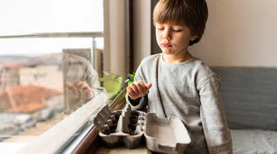

Preparamos los semilleros

Nuestro compost ya está en proceso, pero tardará unos meses y no hay tiempo que perder, por eso comenzamos a crear los semilleros. Entre toda la clase, conseguimos reunir suficientes recipientes de plástico o de cartón reciclado para sembrar en ellos las semillas.